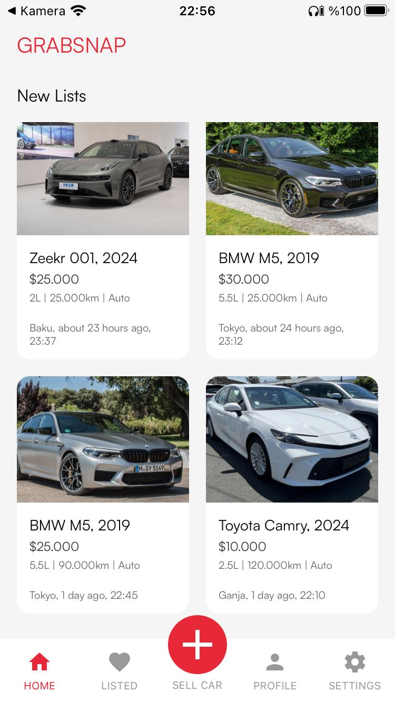
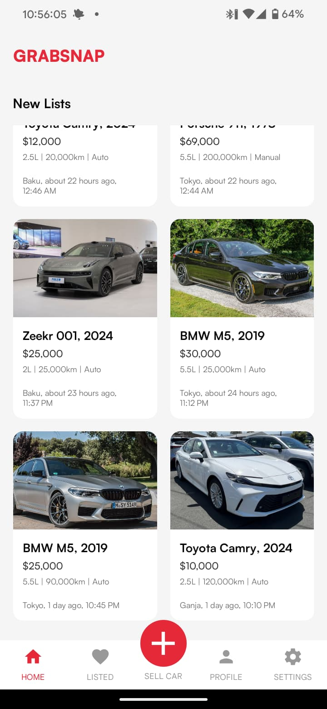
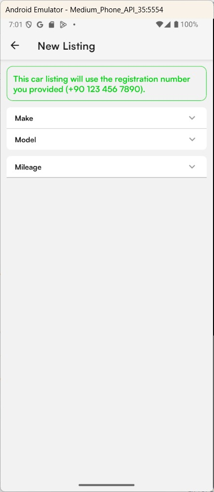
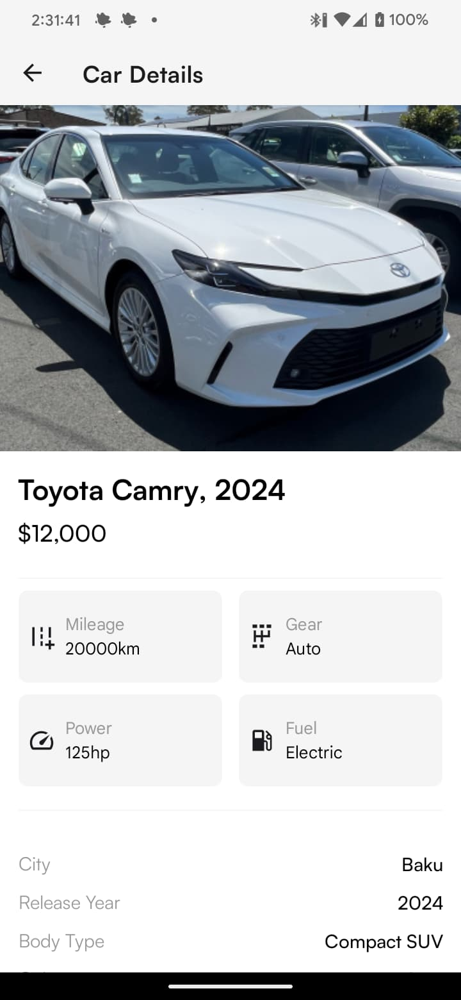
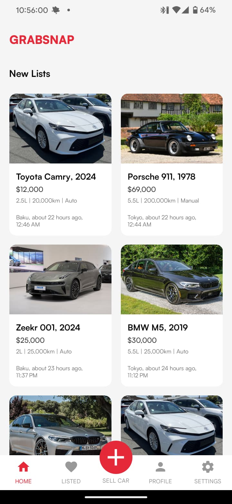
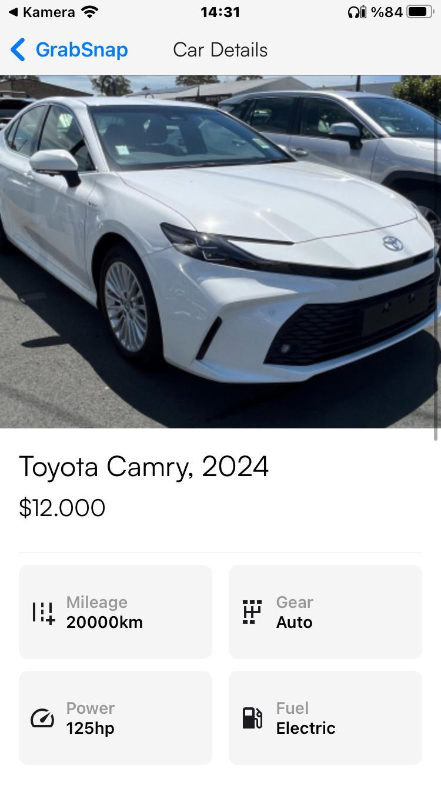
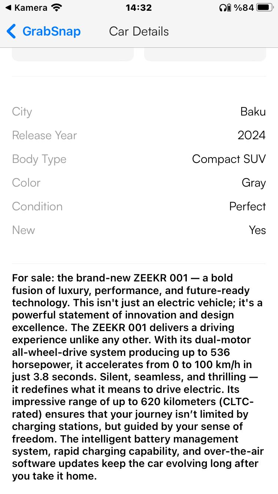
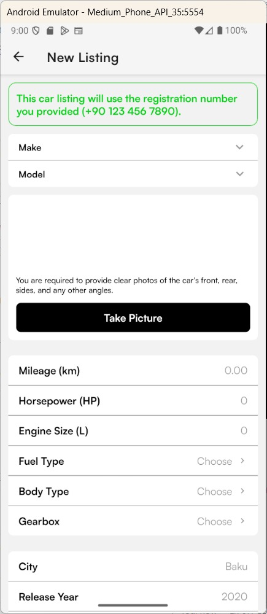
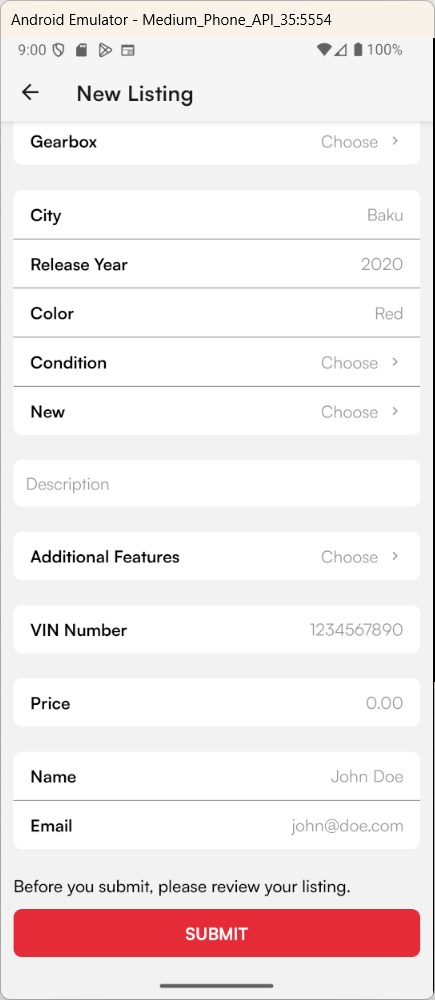

A cross-platform React Native and Expo mobile app for browsing, filtering, and listing second-hand cars.



GrabSnap is a cross-platform mobile app for second-hand car selling. It is a design and frontend-oriented university project, focused on a polished mobile experience for browsing, listing, filtering, authentication, profile, and settings flows rather than a production backend.
The project uses React Native, Expo, TypeScript, React Navigation, Expo Font, Expo Splash Screen, local JSON data, and Expo/EAS build tooling. The app used static car, brand, and model data with simulated loading states to make the UI feel closer to a real mobile marketplace.
I created the base project structure and implemented all files outside the credited design and authentication/context work. My main focus was translating the mobile design into reusable React Native screens, stack and tab navigation, marketplace-style detail pages, form-like listing creation, and consistent visual treatment across a larger set of screens.
The app design was created by @fxidirzade and @kayaahatice. The original design is available on Figma. The authentication screens, AuthContext, AuthProvider, isAuthenticated flow, and Context API work were implemented by @korayakben.
The project source code is available on GitHub.
During development I worked through modal overlay behavior, favorite alignment, font loading, title wrapping, grouped-button TypeScript issues, splash screen behavior, and Android release build testing.






GrabSnap helped me improve my React Native screen architecture, navigation structure, component organization, mobile UI polish, and Expo build workflow awareness.